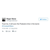

<!DOCTYPE html>
<html lang="en">
 <head>
<!-- Favicon -->
<link rel="shortcut icon" href="../../favicon.ico">
  <meta charset="utf-8"/>
  <title>
   The Universe of Hacked and Leaked Emails from 2016: Podesta Emails | emptywheel
  </title>
  <meta content="Post on /v/Conspiracy from 2019-01-09 by thewebofslime." name="description"/>
  <meta content="The Universe of Hacked and Leaked Emails from 2016: Podesta Emails | emptywheel" property="og:title"/>
  <meta content="Post on /v/Conspiracy from 2019-01-09 by thewebofslime." property="og:description"/>
  <link href="../../static/css/page.css" rel="stylesheet"/>
  <meta content="https://voat.conspiracy.hackliberty.org/thumbnails/89/97/8997c791-acb1-4981-b4a0-abd8b021b13f.png" property="og:image"/>
  <meta content="https://voat.conspiracy.hackliberty.org/v/conspiracy/2962011.html" property="og:url"/>
  <meta content="width=device-width, initial-scale=1" name="viewport"/>
  <link href="https://voat.conspiracy.hackliberty.org/v/conspiracy/2962011.html" rel="canonical"/>
  <meta content="article" property="og:type"/>
  <meta content="Voat /v/Conspiracy Archive" property="og:site_name"/>
  <meta content="en_US" property="og:locale"/>
  <meta content="summary_large_image" name="twitter:card"/>
  <meta content="The Universe of Hacked and Leaked Emails from 2016: Podesta Emails | emptywheel" name="twitter:title"/>
  <meta content="Post on /v/Conspiracy from 2019-01-09 by thewebofslime." name="twitter:description"/>
  <meta content="https://voat.conspiracy.hackliberty.org/thumbnails/89/97/8997c791-acb1-4981-b4a0-abd8b021b13f.png" name="twitter:image"/>
 </head>
</html>
<body class="dark">
 <header>
  <nav class="navbar navbar-dark bg-primary">
    <a class="navbar-brand" href="../../index.html">/v/Conspiracy Archive</a>
    <div class="navbar-collapse">
      <ul class="navbar-nav">
        <li class="nav-item">
          <a class="nav-link" href="../../date/page-1.html">Date</a>
        </li>
        <li class="nav-item">
          <a class="nav-link" href="../../comments/page-1.html">Comments</a>
        </li>
        <li class="nav-item">
          <a class="nav-link" href="../../search.html">Search</a>
        </li>
        <li class="nav-item dropdown">
          <a class="nav-link dropdown-toggle" href="#" id="navbarDropdown" role="button" 
             data-toggle="dropdown" aria-haspopup="true" aria-expanded="false">
            subreddits
          </a>
          <div class="dropdown-menu" aria-labelledby="navbarDropdown">
            <a class="dropdown-item" href="https://reddit.conspiracy.hackliberty.org">r/conspiracy</a>
            <a class="dropdown-item" href="https://reddit.pizzagate.hackliberty.org">r/pizzagate</a>
            <a class="dropdown-item" href="https://voat.conspiracy.hackliberty.org">v/conspiracy</a>
            <a class="dropdown-item" href="https://voat.pizzagate.hackliberty.org">v/pizzagate</a>
          </div>
        </li>
      </ul>
    </div>
  </nav>
</header>

 <div id="container">
  <!-- array (
  'submissionid' => 2962011,
  'creationDate' => '2019-01-09 17:57:06',
  'domain' => 'emptywheel.net',
  'formattedContent' => NULL,
  'isAdult' => 0,
  'isAnonymized' => 0,
  'subverse' => 'Conspiracy',
  'thumbnail' => '8997c791-acb1-4981-b4a0-abd8b021b13f.png',
  'title' => 'The Universe of Hacked and Leaked Emails from 2016: Podesta Emails | emptywheel',
  'url' => 'https://www.emptywheel.net/2018/10/23/the-universe-of-hacked-and-leaked-emails-from-2016-podesta-emails/',
  'userName' => 'thewebofslime',
  'archivedLink' => NULL,
  'archivedDomain' => NULL,
  'isDeleted' => 0,
) --><div class="content" role="main">
   <div class="sitetable linklisting" id="siteTable">
    <div class="submission id-2962011 link type-text" id="submission-2962011">
     <a name="submissionTop">
     </a>
     <p class="parent">
     </p>
     <a class="thumbnail may-blank" href="https://www.emptywheel.net/2018/10/23/the-universe-of-hacked-and-leaked-emails-from-2016-podesta-emails/" target="_self">
      
     </a>
     <div class="entry unvoted">
      <p class="title">
       <a class="title may-blank" href="https://www.emptywheel.net/2018/10/23/the-universe-of-hacked-and-leaked-emails-from-2016-podesta-emails/" tabindex="1" target="_self" title="The Universe of Hacked and Leaked Emails from 2016: Podesta Emails | emptywheel">
        The Universe of Hacked and Leaked Emails from 2016: Podesta Emails | emptywheel
       </a>
       <span class="domain">
        (
        <a href="https://archive.searchvoat.co/search.php?d=emptywheel.net">
         emptywheel.net
        </a>
        )
       </span>
      </p>
      <p class="tagline">
       submitted
       <time datetime="2019-01-09T17:57:06+00:00" title="01/09/2019 5:57:06 PM">
        2019-01-09T17:57
       </time>
       by
       <span class="userattrs">
        <a class="author may-blank" href="https://archive.searchvoat.co/search.php?u=thewebofslime">
         thewebofslime
        </a>
       </span>
      </p>
      <ul class="flat-list buttons">
       <li class="first">
        <a class="comments may-blank" href="https://archive.searchvoat.co/v/Conspiracy/2962011" rel="nofollow">
         1 comment
        </a>
       </li>
      </ul>
     </div>
     <div class="child">
     </div>
     <div class="clearleft">
     </div>
    </div>
    <div class="clearleft">
    </div>
   </div>
   <div class="horizontal-line">
   </div>
   <div class="commentarea">
    <div class="sitetable nestedlisting" id="siteTable">
     <div class="child id-16013216 comment even" style="">
      <div class="entry unvoted">
       <div class="noncollapsed" id="16013216" style=";">
        <p class="tagline">
         <a class="author may-blank" href="https://archive.searchvoat.co/search.php?u=thewebofslime">
          thewebofslime
         </a>
         <span class="userattrs">
         </span>
         <time datetime="2019-01-09T18:49:01+00:00" title="1/9/2019 6:49:01 PM">
          2019-01-09T18:49
         </time>
        </p>
        <div class="usertext-body may-blank-within" id="commentContent-16013216">
         <div class="md">
          <p>
           <p>
            empywheel has a bit of a slant, but has done a fair job of summing up a lot of what is going on with the leaks and the Mueller cases.
           </p>
           <p>
            In conjunction with this article, I think a little context helps. Exposition.... ewww gross.
           </p>
           <p>
            First, Seth Rich more certainly had access to the NGP VAN data than anything else. The Sanders campaign discovered the exploit in the NGP VAN software as put there intentionally by Hillary Clinton's friend, the owner. Being able to compare Hillary's NGP VAN data with Bernie's revealed the software exploit was designed to steal votes and donations from all the other Democrats.
           </p>
           <p>
            Seth Rich did not get the Podesta emails, which were phished from a server in Holland that was named after a county in New Zealand... pointing directly (if a bit conveniently) at kimdotcom. Hold that thought.
           </p>
           <p>
            Seth Rich, if he had the DCCCC emails, was not the one who started DCLeaks, and would, therefore, still not be the Wikileaks source.
           </p>
           <p>
            Shortly after the NGP VAN data was accessed by both campaigns, we also had the Mossack Fonseca story break. We had the Guccifer 2.0 files. We had the Podesta's passwords for everything. Notice that POdesta's "everything" never made it to Wikileaks.
           </p>
           <p>
            Roger Stone told Steve Bannon, in confidence, that the Clintons and Assange had already cut a deal, which would explain the selectivity of the leaks. But that wasn't until lat ein the game.
           </p>
           <p>
            The first person to know there was a leak, that we can confirm, is Mifsud, a Maltese multi-international operator. He told Papdapolous in early 2016 and Roger Stone didn't seem to know what was up until August.
           </p>
           <p>
            In my opinion, that means Mueller has been looking for the same thing a lot of us online researchers have been looking for... WHO GAVE THE PODESTA EMAILS TO WIKILEAKS? But there is more to it, because multiple leaks were orchestrated across multiple platforms, essentially blue dying all of the "leak outlets."
           </p>
           <p>
            Each outlet was given data which they selectively leaked (notice how convenient the stop and start times of the Podesta emails were) and each outlet failed the smell test, failing to release all they were given. As soon as this was realized "FBIAnon" hit in 2016, spilling the beans on the whole operation.
           </p>
           <p>
            So, while this article is good, it is FAR from the "universe" of leaks. It does expose a lot of fake narratives in the MSM as being patently false.
           </p>
           <p>
            However, we are still not given the money trail to the Podestas from Ruben Vardanyan. It seems that NO JOUNRALIST IS ALLOWED TO TALK ABOUT RUBEN VARDANYAN. I was even banned from reddit's "The_Donald" for posting a detailed article about him. Instantly. Before it even got a few upvotes.
           </p>
           <p>
            Ruben VArdanyan was the money man who paid Tony Podesta through Troika Dialog and John Podesta through Joule Unlimited, but that is just the tip of the iceberg. Still, no one talks about the money man. This money made it from the Podestas to the Center for American Progress into the pockets of David Brock. We have a factual money trail, confirmed by publicly available information that the Russians paid to support Hillary Clinton in the election to protect the Uranium One deal. FACT.
           </p>
           <p>
            Now, what has Rosatom done with that leverage? They have gone into conquest mode, buiolding a new nuclear alliance larger than NATO where the countries they are in are getting new nuclear reactors and are, all of the sudden, not afraid to upset the oil oligopoly.
           </p>
           <p>
            Turkey, after 40 years, started drilling on the Cyprus shelf the day Khashoggi was found to be murdered. That same day, Nigeria announced plans to drill, offshore, for oil, expanding production. India is now paying in rupees for Iranian oil. THEY ARE ALL GETTING HELP FROM RUSSIA.
           </p>
           <p>
            Rosatom is moving in on Saudi Arabia and just submitted a bid to build 4 reactors there against US Bechtel.
           </p>
           <p>
            Which brings us to Mueller, who is also protecting the Uranium One deal. Rosatom refined uranium in Novosibirsk, which was then being smuggled through Georgia to Iran. Georgia CAUGHT the HEU. Russia wouldn't help, so they asked Mueller, who simply took the evidence and personally delivered it back to Russia.
           </p>
           <p>
            These are the facts that prove every journalist is lying to you.
           </p>
          </p>
         </div>
        </div>
        <ul class="flat-list buttons">
         <li class="first">
          <a class="bylink" href="https://archive.searchvoat.co/v/Conspiracy/2962011/16013216" rel="nofollow">
           link
          </a>
         </li>
        </ul>
       </div>
      </div>
     </div>
    </div>
   </div>
  </div>
 </div>
<!-- Footer Section -->
<footer class="container-fluid mt-3">
  <p class="small mb-0">
    /v/conspiracy archive has 42504 posts and 159856 total comments.
    <a href="https://git.hackliberty.org/c0mmando/voat-conspiracy-archive/">source code</a>.
  </p>
</footer>

<script src="../../static/js/jquery-3.7.1.slim.min.js"></script>
<script src="../../static/js/comments-toggle.js"></script>

</body>
